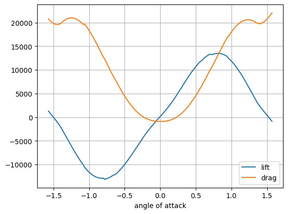

2021 年度年终总结计划
指导老师：黎兴刚
汇报人员：梁钰栋
目录
- 课程
- 科研
- 总结
- 致谢
2021 年秋季学期
| 课程代码 | 课程名称 | 课组名称 | 开课学院 | 课程成绩 | 课程等级 | 学分 |
|---|---|---|---|---|---|---|
| GGC5019 | 新时代中国特色社会主义理论与实践 | 通识必修课 | 思想政治教育与研究中心 | 94 | A- | 2 |
| GGC5026 | 工程伦理 | 通识必修课 | 创新创业学院 | 94 | A- | 1 |
| MEE5002 | 项目管理基础与实践 | 创新创业课 | 机械与能源工程系 | 92 | A- | 3 |
| MAT5002 | 数值分析 | 数学类基础课 | 数学系 | 92 | A- | 3 |
| MEE5218 | 工程结构分析与性能 | 专业核心课 | 机械与能源工程系 | 90 | A- | 3 |
| HUM005 | 科幻电影鉴赏与批评 | 人文素养课 | 人文科学中心 | 90 | A- | 2 |
| GGC5017 | 自然辩证法概论 | 通识必修课 | 思想政治教育与研究中心 | 86 | B+ | 1 |
| MEE5205 | 断裂力学与失效分析 | 专业核心课 | 机械与能源工程系 | 85 | B+ | 3 |
| GGC5046 | 南科大研究生英语 | 通识必修课 | 语言中心 | 80 | B | 2 |
| MAE5004 | 高等流体力学 | 专业选修课 | 力学与航空航天工程系 | 78 | B- | 3 |
2022 年春季学期
| 课程代码 | 课程名称 | 课组名称 | 开课学院 | 课程成绩 | 课程等级 | 学分 |
|---|---|---|---|---|---|---|
| MAE5005 | 高等计算流体力学 | 专业选修课 | 力学与航空航天工程系 | 3 | ||
| ACA6001 | Seminar | 讲座Seminar | 研究生院 | 2 |
文献阅读
- 不同物理性质（密度、粘度、表面张力等）与不同物质状态（固态、液态）的二元球体在不同初始条件（速率、角度等）下的实验、理论及数值模拟
- 探究无量纲数（雷诺数、韦伯数、奥内佐格数等）与以上实验中的某个物理量之间的关系
YAML 格式的 OpenFOAM 算例
📁 <case>
├── 📁 constant
│ ├── 📁 polyMesh
│ │ ├── boundary
│ │ ├── faces
│ │ ├── neighbour
│ │ ├── owner
│ │ └── points
│ └── properties
├── 📁 system
│ ├── controlDict
│ ├── fvSchemes
│ └── fvSolution
└── 📁 time directories
--- # meta
openfoam: 7
--- # foam
"0":
p: {}
U: {}
constant:
transportProperties: {}
turbulenceProperties: {}
system:
controlDict: {}
fvSchemes: {}
fvSolution: {}
--- # static

研究课题
- 不同物理性质（密度、粘度、表面张力等）的二元液滴在不同初始条件（速率、角度等）下的实验、理论及数值模拟
- 在数值模拟中，通过二分法求出若干组物理性质对应的反弹临界速度
- 通过回归分析探究无量纲数与反弹临界速度之间的关系，并加以验证
总结
- 创新点寻找
* 通过多看论文寻找 idea
* 通过传统方法启示创新 idea
* 通过纵向阅读学习如何创新
- 论文阅读
* 了解领域时要把握脉络
* 找出真正起作用的部分
* 关注文章的表达
- 实验部分
* 不要执着某一方法
* 尊重实验客观规律
* 充分利用开源代码
* 基础细节的注意
* 实验数据及时备份
致谢
感谢朱老师、黎老师对我的指导与培养！
感谢团队中师兄师姐们对我的无私帮助！
祝大家在 2022 年事业有成、如虎添翼！